アプリの各画面でできることと、家族タブ・設定の全項目の説明です。必要なところだけ拾い読みしてください（画像はタップで拡大）。
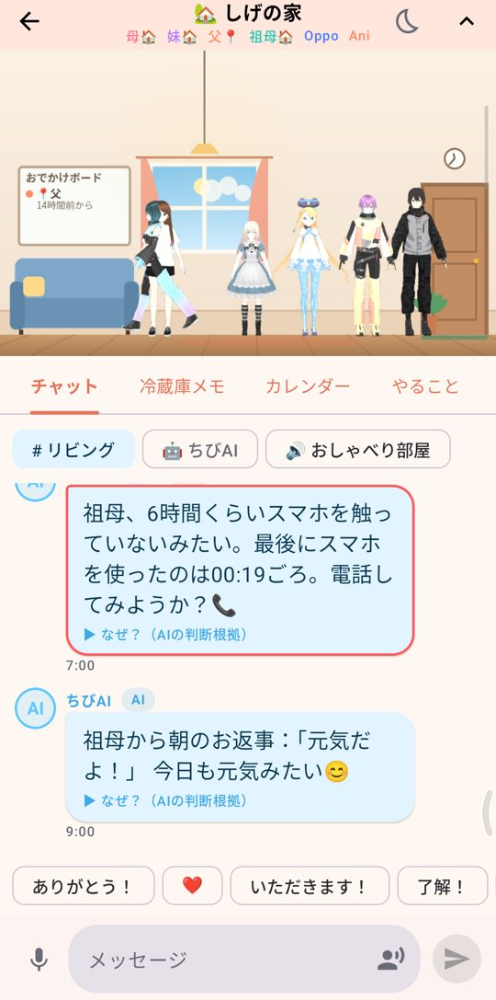
家族の画面その人の様子（最後にスマホを触った時刻・電池）と、「つんつん」「なでなで」ボタンが出ます。
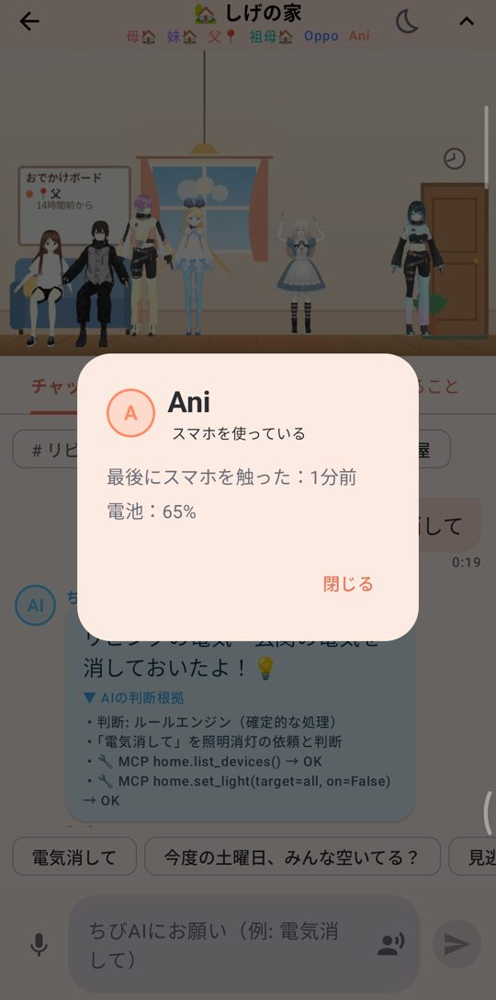
ちびっこをタップ# リビング（家族みんな）・🤖 ちびAI（AIに頼む）・🔊 おしゃべり部屋（音声通話）。AIや急ぎ判定の吹き出しにある「▶ なぜ？」を押すと、どう判断したか（使った道具・参照した会話）が見られます。AIが「本人に聞かないと分からない」と判断すると、あなたに質問カードが届き、答えると自動で集計されます。
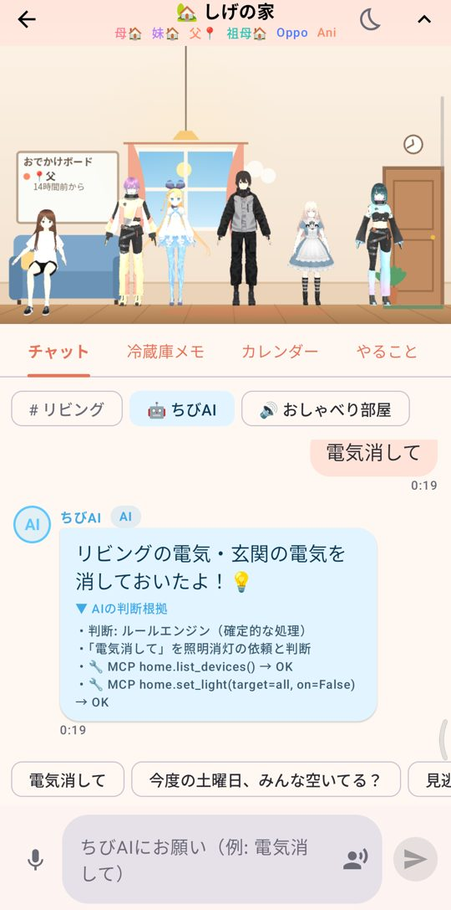
なぜ？右上の 🌙 から 30分／1時間／3時間／明日の朝まで。ちびっこ・読み上げ・通知音が止まり、連絡は音なし通知で残ります。
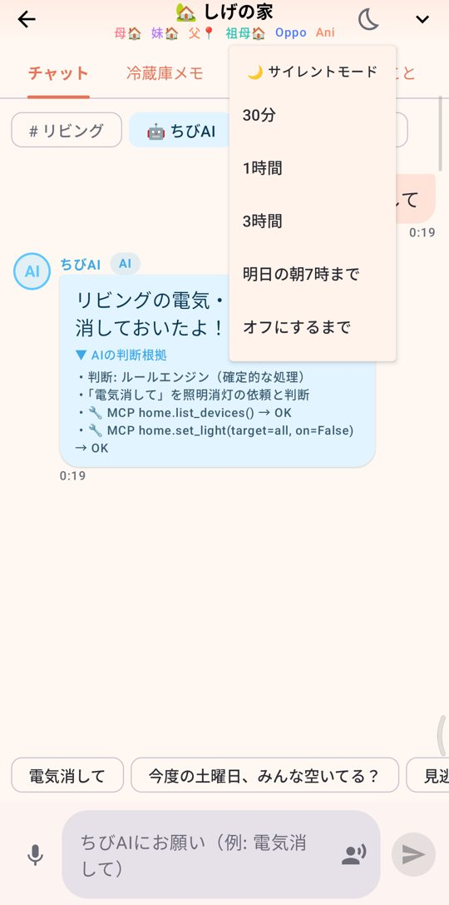
サイレント「15日16時：カレー作っておいたから食べてね」のように日時を文頭に書くと、その時刻に相手のスマホであなたのちびっこが踊ってお知らせ。宛先は「みんなへ」か一人を選択。タップで完了、長押しで剥がす。
使える書き方：今日・明日・明後日・今夜／15日・10月3日・10/3／来週の土曜／16時半・16:30／朝・夕方・夜／30分後・2時間後
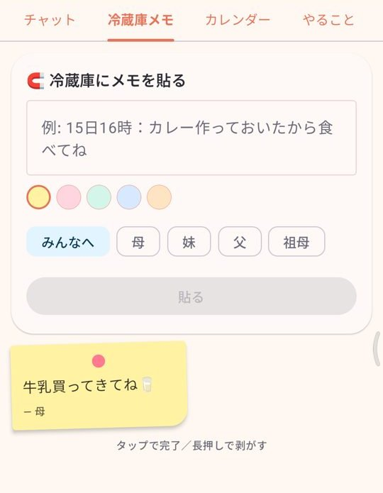
冷蔵庫メモ日付をタップ → ＋追加。「家族みんなの予定」か自分の予定かを選べ、内容を非公開にすると家族には「予定あり」とだけ表示。誕生日は自動で表示されます。
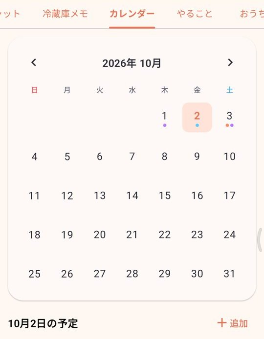
カレンダー「お風呂掃除」などを入れて、頼む人（だれでも／指名）を選んで追加。チェックすると、頼んだ人のスマホに「やっておいたよ！」とちびっこが報告に行きます。
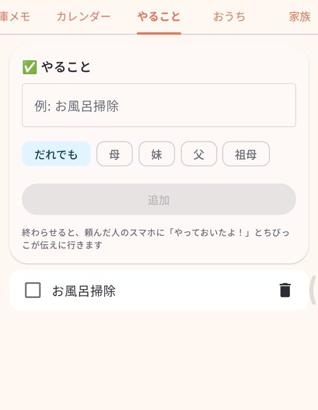
やること家電の状態一覧とスイッチ。「ちびAIに頼む」ボタンで「電気消して」「エアコンつけて」も。操作するとリビングの部屋も暗く／明るくなります。
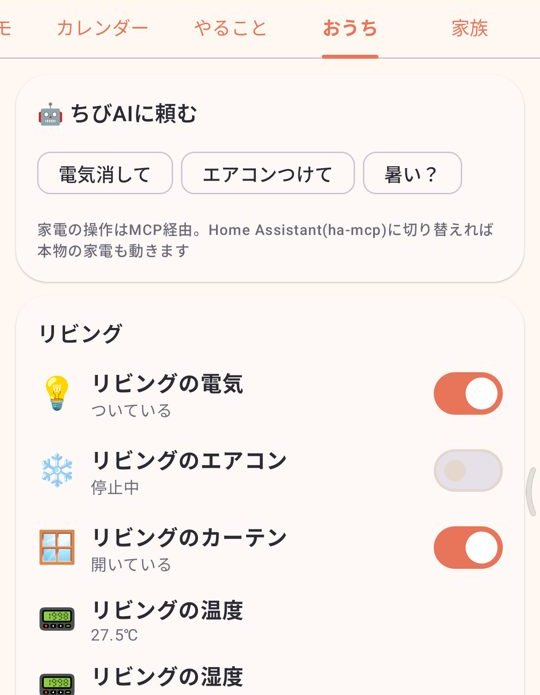
おうち家族の一覧。つんつん・なでなでは相手のスマホのちびっこに届きます（ちょっとした「元気？」に）。
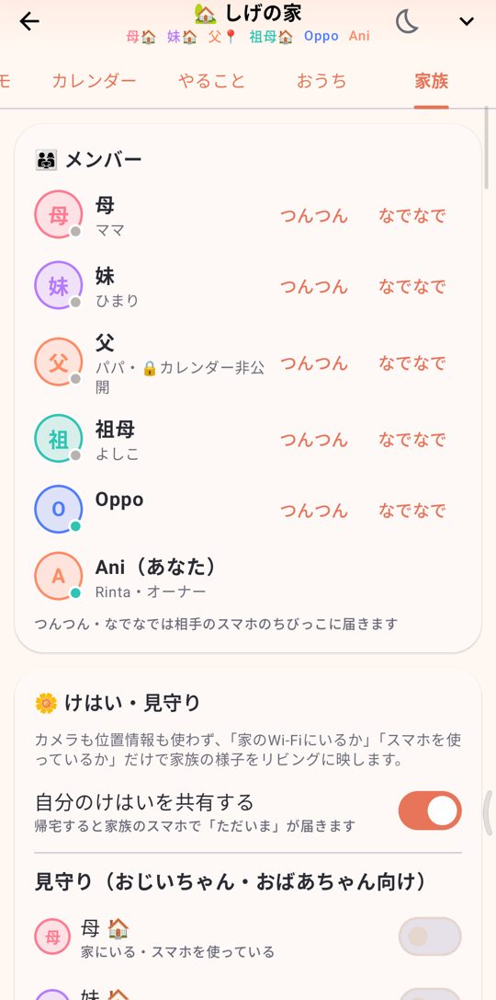
メンバー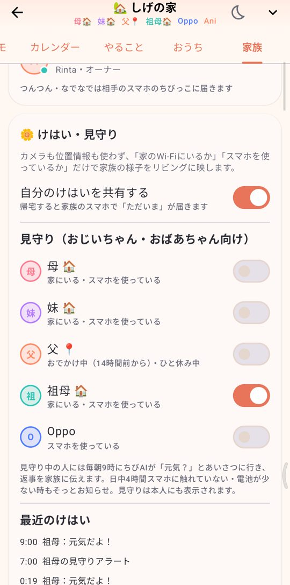
けはい・見守り有効期限（1時間〜期限なし）を選んで「招待リンクを送る」。LINEやメールでそのまま押せるリンクとQRができます。名前を入れた専用の招待は1回だけ使え、NFCカードにも書き込めます。下の6文字は招待コード。
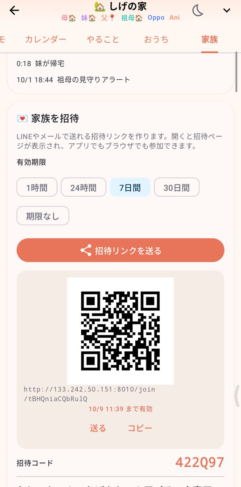
招待リンクAIちびっこ／家電操作／LLM のON・OFF、AIの名前と見た目、Ollama のURL・モデル、家電につなぐMCPサーバー。上の「判断エンジン」でLLMにつながっているか確認できます（つながっていなくてもルールエンジンで動作）。くわしくは サーバーの建て方。
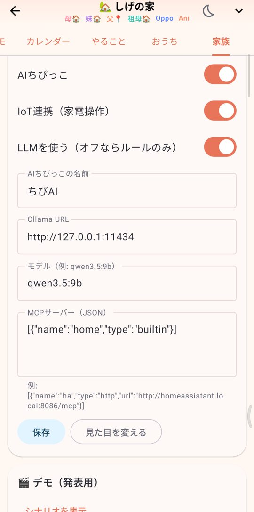
AIちびっこ・IoT呼ばれ方（母・兄など。AIもこの名前で呼びます）、カレンダーを非公開（AIは予定を推測せず本人に聞きに来ます）、おやすみ時間（この時間は急ぎ以外そっと届けます）。
誕生日を登録している家族がいると表示。メッセージを書いておくと誕生日の0時に届き、家族全員のちびっこが集まってお祝いします（本人にはないしょ）。
「シナリオを表示」から、帰宅・お昼寝・見守り・迎えに来て・誕生日パーティー・電気消して などを1タップで再現できます。
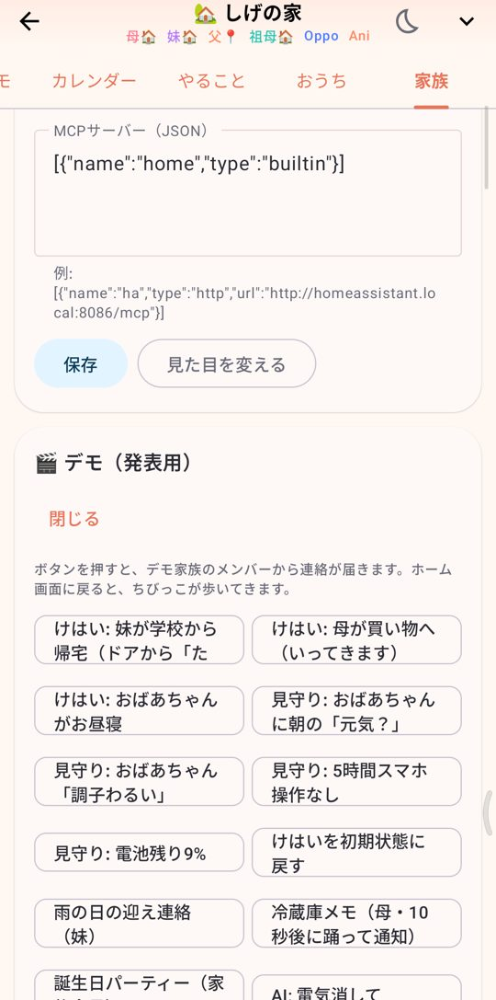
デモ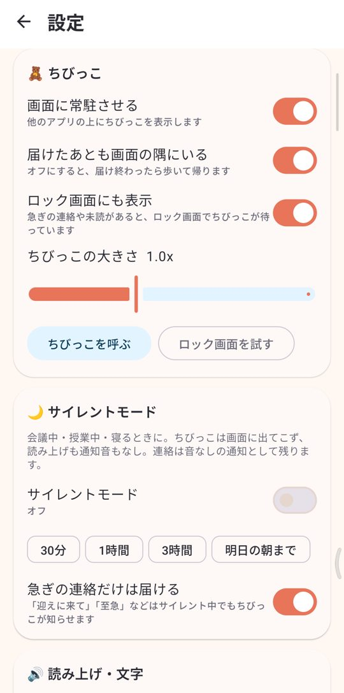
ちびっこ・サイレント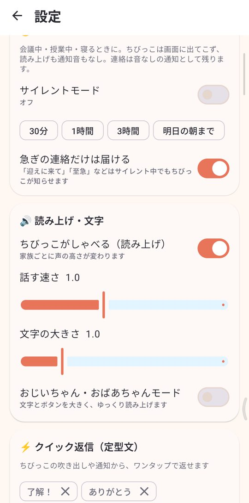
読み上げ・クイック返信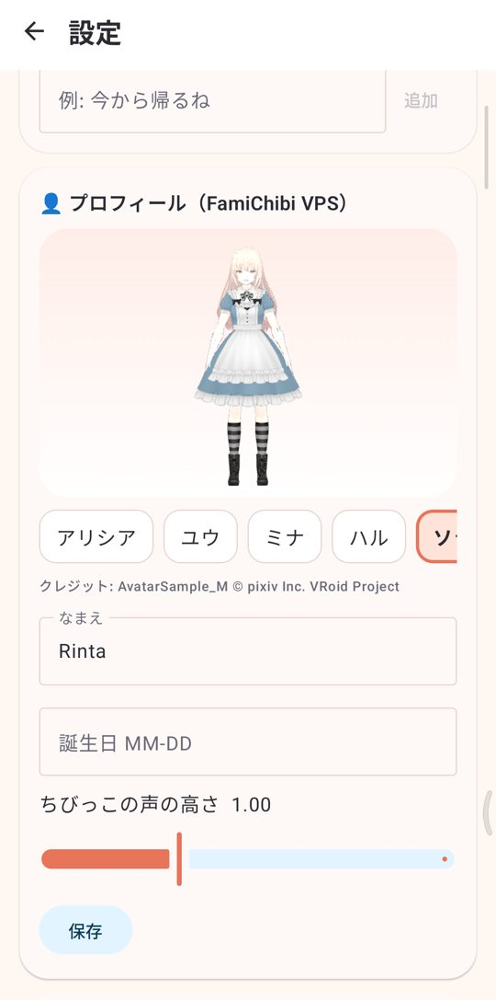
プロフィールアプリを入れなくても、招待リンクの「💬 ブラウザでチャットする」から名前とアバターを選ぶだけで参加できます。チャット・リビング・冷蔵庫メモ・カレンダー・やること・おうち・設定（招待リンク作成も）が使えます。
ホーム画面への常駐・ロック画面表示・けはいの自動共有はアプリだけの機能です。
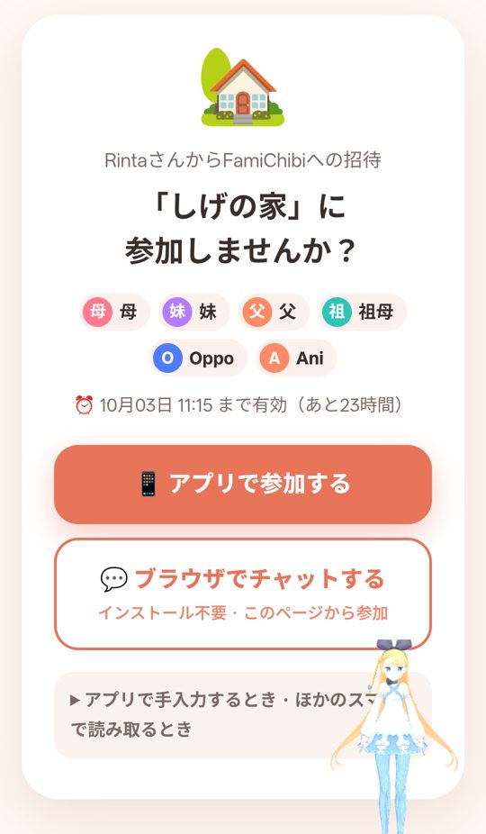
招待リンクの画面サーバーのアドレス（例：http://サーバー:8010）をブラウザで開くと、同じリビングに参加できます。